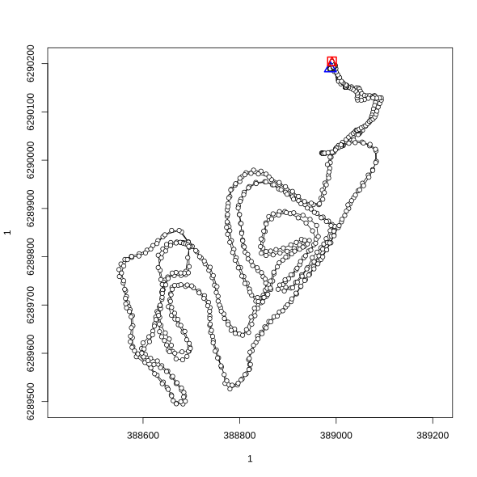
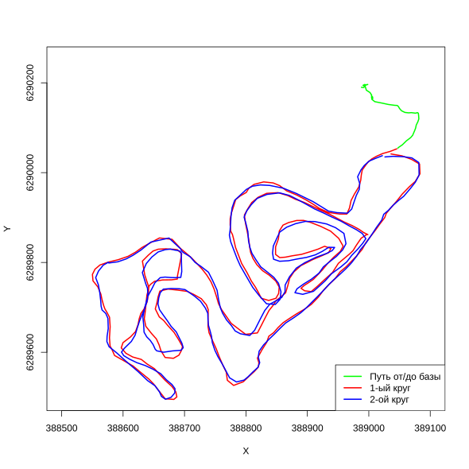
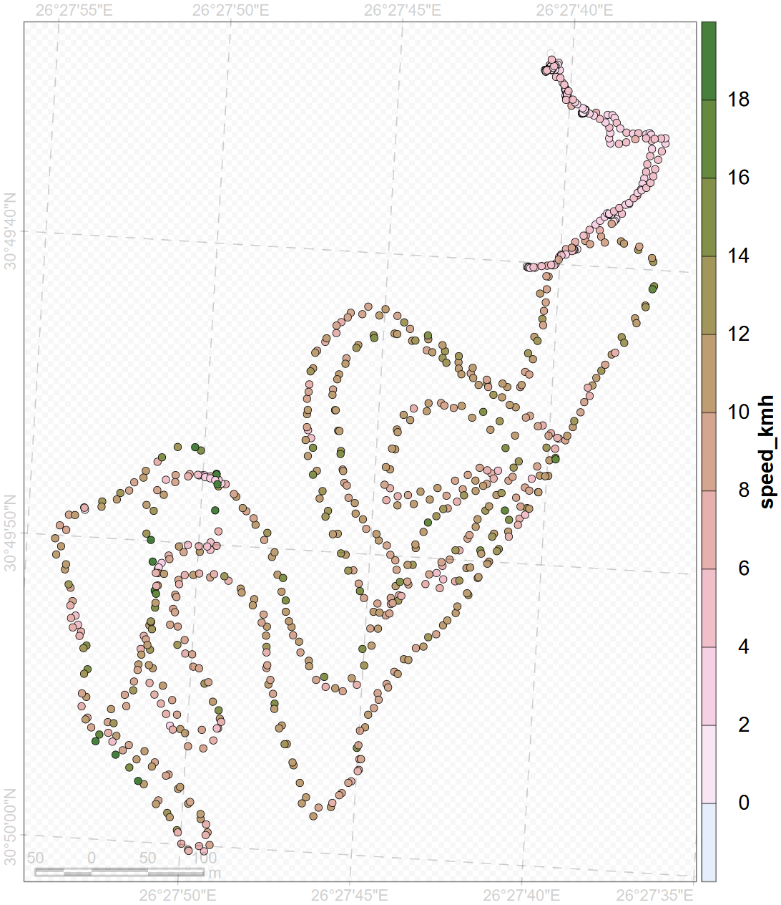
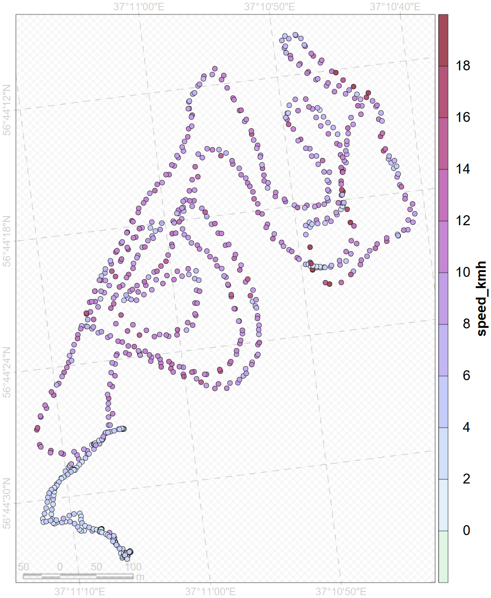

Loading required package: gpxLinking to GEOS 3.13.1, GDAL 3.11.4, PROJ 9.7.0; sf_use_s2() is TRUELoading required package: spLoading required package: ade4Loading required package: adehabitatMARegistered S3 methods overwritten by 'adehabitatMA':
method from
print.SpatialPixelsDataFrame sp
print.SpatialPixels sp Loading required package: dplyr
Attaching package: 'dplyr'The following objects are masked from 'package:stats':
filter, lagThe following objects are masked from 'package:base':
intersect, setdiff, setequal, union# setwd("/Users/ksusasaveleva/R_projects/Modeling/Ski")
loc <- st_read("../../../data/2022-01-09_14-00_Sun.gpx", layer = "track_points") |>
st_transform(32637)Reading layer `track_points' from data source `C:\platt\education\sevinGIS\data\2022-01-09_14-00_Sun.gpx' using driver `GPX'
Simple feature collection with 835 features and 26 fields
Geometry type: POINT
Dimension: XY
Bounding box: xmin: 37.178 ymin: 56.73616 xmax: 37.18673 ymax: 56.7426
Geodetic CRS: WGS 84| track_fid | track_seg_id | track_seg_point_id | ele | time | magvar | geoidheight | name | cmt | desc | src | link1_href | link1_text | link1_type | link2_href | link2_text | link2_type | sym | type | fix | sat | hdop | vdop | pdop | ageofdgpsdata | dgpsid | geometry |
|---|---|---|---|---|---|---|---|---|---|---|---|---|---|---|---|---|---|---|---|---|---|---|---|---|---|---|
| 0 | 0 | 0 | 141.2 | 2022-01-09 11:00:18 | NA | NA | NA | NA | NA | NA | NA | NA | NA | NA | NA | NA | NA | NA | NA | NA | 20 | NA | NA | NA | NA | POINT (388988 6290190) |
| 0 | 0 | 1 | 141.2 | 2022-01-09 11:00:23 | NA | NA | NA | NA | NA | NA | NA | NA | NA | NA | NA | NA | NA | NA | NA | NA | 20 | NA | NA | NA | NA | POINT (388988.1 6290190) |
| 0 | 0 | 2 | 141.2 | 2022-01-09 11:00:28 | NA | NA | NA | NA | NA | NA | NA | NA | NA | NA | NA | NA | NA | NA | NA | NA | 20 | NA | NA | NA | NA | POINT (388988.1 6290190) |
| 0 | 0 | 3 | 141.2 | 2022-01-09 11:00:33 | NA | NA | NA | NA | NA | NA | NA | NA | NA | NA | NA | NA | NA | NA | NA | NA | 20 | NA | NA | NA | NA | POINT (388988.1 6290190) |
| 0 | 0 | 4 | 141.2 | 2022-01-09 11:00:38 | NA | NA | NA | NA | NA | NA | NA | NA | NA | NA | NA | NA | NA | NA | NA | NA | 20 | NA | NA | NA | NA | POINT (388988.1 6290190) |
| 0 | 0 | 5 | 141.2 | 2022-01-09 11:00:48 | NA | NA | NA | NA | NA | NA | NA | NA | NA | NA | NA | NA | NA | NA | NA | NA | 20 | NA | NA | NA | NA | POINT (388988.1 6290190) |
[1] "sf" "data.frame"Coordinate Reference System:
User input: EPSG:32637
wkt:
PROJCRS["WGS 84 / UTM zone 37N",
BASEGEOGCRS["WGS 84",
ENSEMBLE["World Geodetic System 1984 ensemble",
MEMBER["World Geodetic System 1984 (Transit)"],
MEMBER["World Geodetic System 1984 (G730)"],
MEMBER["World Geodetic System 1984 (G873)"],
MEMBER["World Geodetic System 1984 (G1150)"],
MEMBER["World Geodetic System 1984 (G1674)"],
MEMBER["World Geodetic System 1984 (G1762)"],
MEMBER["World Geodetic System 1984 (G2139)"],
MEMBER["World Geodetic System 1984 (G2296)"],
ELLIPSOID["WGS 84",6378137,298.257223563,
LENGTHUNIT["metre",1]],
ENSEMBLEACCURACY[2.0]],
PRIMEM["Greenwich",0,
ANGLEUNIT["degree",0.0174532925199433]],
ID["EPSG",4326]],
CONVERSION["UTM zone 37N",
METHOD["Transverse Mercator",
ID["EPSG",9807]],
PARAMETER["Latitude of natural origin",0,
ANGLEUNIT["degree",0.0174532925199433],
ID["EPSG",8801]],
PARAMETER["Longitude of natural origin",39,
ANGLEUNIT["degree",0.0174532925199433],
ID["EPSG",8802]],
PARAMETER["Scale factor at natural origin",0.9996,
SCALEUNIT["unity",1],
ID["EPSG",8805]],
PARAMETER["False easting",500000,
LENGTHUNIT["metre",1],
ID["EPSG",8806]],
PARAMETER["False northing",0,
LENGTHUNIT["metre",1],
ID["EPSG",8807]]],
CS[Cartesian,2],
AXIS["(E)",east,
ORDER[1],
LENGTHUNIT["metre",1]],
AXIS["(N)",north,
ORDER[2],
LENGTHUNIT["metre",1]],
USAGE[
SCOPE["Navigation and medium accuracy spatial referencing."],
AREA["Between 36°E and 42°E, northern hemisphere between equator and 84°N, onshore and offshore. Djibouti. Egypt. Eritrea. Ethiopia. Georgia. Iraq. Jordan. Kenya. Lebanon. Russian Federation. Saudi Arabia. Somalia. Sudan. Syria. Türkiye (Turkey). Ukraine."],
BBOX[0,36,84,42]],
ID["EPSG",32637]]# Извлеките координаты как обычные числа
coords <- st_coordinates(loc)
x_coords <- coords[, "X"] # долгота
y_coords <- coords[, "Y"] # широта
# Проверьте, что координаты - числа
print(class(x_coords))[1] "numeric"[1] 388988.0 388988.1 388988.1 388988.1 388988.1 388988.1lt1 <- as.ltraj(
xy = cbind(x_coords, y_coords), # важно: матрица, а не data.frame
date = loc$time, # время POSIXct
id = loc$track_seg_id, # ID сегмента
typeII = TRUE, # явно указываем тип II
proj4string = sp::CRS(st_crs(loc)$proj4string)
)
plot(lt1) # полный трек из точек
df <- ld(lt1)
df$speed_kmh <- df$dist / df$dt * 3.6
df$cum_dist <- cumsum(df$dist)/1000
# расчет 1-го круга
dist_1 <- df[["dist"]][94:395]
sum(dist_1)[1] 4522.259# 1 круг с начинается с разгона 8.87 км/ч
t1 <- df[94:395,]
dlt1 <- dl(t1)
df_t1 <- ld(dlt1)
time_1 <- df_t1 |>
summarise(finish1 = max(date, na.rm = TRUE),
start1 = min(date, na.rm = TRUE))
# расчет по 2-му кругу
dist_2 <- df[["dist"]][396:690]
sum(dist_2)[1] 4523.89# 2 круг заканчивается максимальной скоростью 11.87 км/ч
t2 <- df[396:690,]
dlt2 <- dl(t2)
df_t2 <- ld(dlt2)
time_2 <- df_t2 |>
summarise(finish2 = max(date, na.rm = TRUE),
start2 = min(date, na.rm = TRUE))
# расстояние от базы до начала круга
b_start <- df[["dist"]][1:93]
sum(b_start)[1] 258.7732b_start <- df[1:93,]
b_start <- dl(b_start)
df_b_start <- ld(b_start)
# и наоборот
start_b <- df[["dist"]][691:834]
sum(start_b)[1] 432.9444# получилось 258.7 туда и 432.9 обратно
# (скорее 258.7 м, потому что на обратном пути появляется крюк)
# всего
all_dist <- df[["dist"]][1:834]
sum(all_dist)[1] 9737.867[1] 9046.15plot(df_t1$x, df_t1$y, type = "l", col = "red", lwd = 2,
xlim = c(388500, 389100),
ylim = c(6289500, 6290250),
xlab = "X",
ylab = "Y")
lines(df_t2$x, df_t2$y, col = "blue", lwd = 2)
lines(df_b_start$x, df_b_start$y, col = "green", lwd = 2)
legend ("bottomright",
legend = c("Путь от/до базы", "1-ый круг","2-ой круг"),
col = c("green", "red", "blue"),
lty = c(1, 1, 1),
lwd = c(2, 2, 2))
# поиск удаленной точки ---------------------------------------------------
base_point <- df[1,]
points_sf <- st_as_sf(df, coords = c("x", "y"), crs = st_crs(base_point))
base_point <- st_as_sf(base_point, coords = c("x", "y"), crs = st_crs(points_sf))
# Вычисляем расстояния до базы
distances <- st_distance(points_sf, base_point)
# Находим точку с максимальным расстоянием
max_dist_idx <- which.max(distances)
max_point <- points_sf[max_dist_idx, ]
max_distance <- distances[max_dist_idx]
# Результат
cat("Максимальное расстояние:", round(max_distance, 2), "метров\n")Максимальное расстояние: 764.38 метровКоординаты максимально удаленной от базы точки: 388669 6289495Writing layer `df_reproduced' to data source `df_reproduced.shp' using driver `ESRI Shapefile'Warning in CPL_write_ogr(obj, dsn, layer, driver, as.character(dataset_options), : GDAL Message 6: Field
date created as String field, though DateTime requested.Writing 835 features with 13 fields and geometry type Point.
Reading layer `df' from data source
`df.shz' using driver `ESRI Shapefile'
Simple feature collection with 835 features and 14 fields
Geometry type: POINT
Dimension: XY
Bounding box: xmin: -457759 ymin: 3630174 xmax: -457241.7 ymax: 3630896
Projected CRS: WGS 84 / North Pole LAEA Alaska
[1] "+proj=laea +lat_0=90 +lon_0=-150 +x_0=0 +y_0=0 +datum=WGS84 +units=m +no_defs"[1] "+proj=laea +lat_0=90 +lon_0=-150 +x_0=0 +y_0=0 +datum=WGS84 +units=m +no_defs"